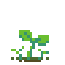

about
world's end garden is an action/platformer adventure with visual novel and gardening simulation elements. the game is split into 5 chapters, with each chapter lasting between 30 minutes to 1 hour.
it centers around an amnesiac teenager who wakes from stasis decades after the apparent near-extinction of humanity due to an unclear apocalyptic event. the story follows their exploration of a ruined city, which has long been reclaimed by nature, as they work to uncover the truths behind the end of the world and wake the rest of the survivors from stasis.
music

|  | ||
faq
what is world's end garden being developed in?
mystery studio 4
when will the game be released?
optimistically, mid-20XX
will the game be on mobile / console x / etc?
there are no plans to port the game anywhere else. please do not email me about this anymore
are you afraid of god?
maybe a little bit